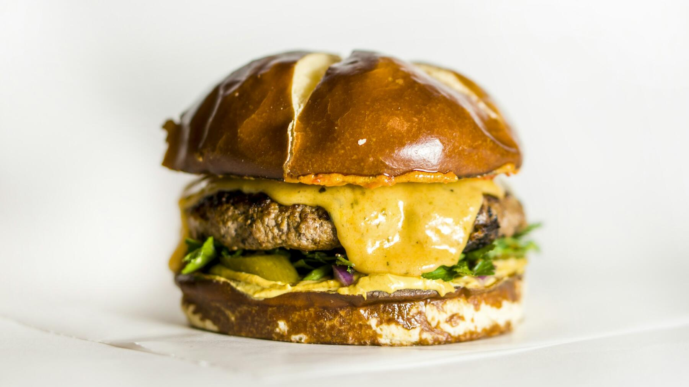

Zurück zur Übersicht
Smashburger
Dünn in die heiße Pfanne gedrückte Patties mit krosser Kruste, geschmolzenem Käse, Zwiebeln, Gürkchen und Burgersoße.
- Zeit
- 30 Min.
- Schwierigkeit
- leicht
- Kategorie
- Pfanne
- Ernährung
- mit Fleisch
Zutaten
Portionen
Burger
- 4Burgerbuns
- 400 gRinderhack (am besten 20 % Fett)
- 1große Zwiebel
- 4 ScheibenSchmelzkäse (Cheddar-Scheiben)
- 4Gewürzgurken
- 1 ELÖl
- Salz, Pfeffer
Burgersoße
- 4 ELMayonnaise
- 2 ELKetchup
- 1 TLSenf
- 1 ELGewürzgurke, fein gehackt
- 1 TLGurkenwasser aus dem Glas
- ½ TLPaprikapulver, edelsüß
Zubereitung
- Für die Soße alle Zutaten verrühren und kalt stellen.
- Die Zwiebel mit einem Gemüsehobel hauchdünn hobeln. Die Gürkchen in Scheiben schneiden. Die Buns aufschneiden.
- Das Hack in Kugeln à 100 g teilen (eine pro Burger), nicht kneten und nicht würzen. Bis zum Braten kalt lassen.
- Eine Gusseisen- oder Edelstahlpfanne sehr heiß werden lassen und dünn mit Öl auspinseln. 2 bis 3 Kugeln hineinlegen und jeweils eine Handvoll gehobelte Zwiebeln obendrauf geben.
- Ein Stück Backpapier auf eine Kugel legen und mit einem breiten Pfannenwender oder einem Topfboden kräftig flach drücken (ca. 1 cm dünn), sodass die Zwiebeln ins Fleisch gepresst werden. Salzen und pfeffern.
- Etwa 2 Minuten braten, bis der Rand dunkelbraun und knusprig ist. Mit dem Pfannenwender unter der Kruste lösen und wenden, sodass die Zwiebeln jetzt unten in der Pfanne garen.
- Sofort eine Scheibe Käse auf das Patty legen und beide Bun-Hälften direkt darauflegen. Etwa 1 Minute weiterbraten: Der Dampf aus Fleisch und Zwiebeln macht die Buns weich und lässt den Käse schmelzen.
- Die Bun-Unterseite mit Soße bestreichen, das Patty mit Käse und Zwiebeln darauflegen, Gürkchen darauf, den Deckel mit Soße bestreichen, zuklappen und sofort essen.
Tipp: Nur einmal drücken, gleich nachdem Fleisch und Zwiebeln in der Pfanne liegen. Später drücken presst den Saft heraus. Für mehr Dampf beim Wenden einen Spritzer Wasser neben das Patty geben.